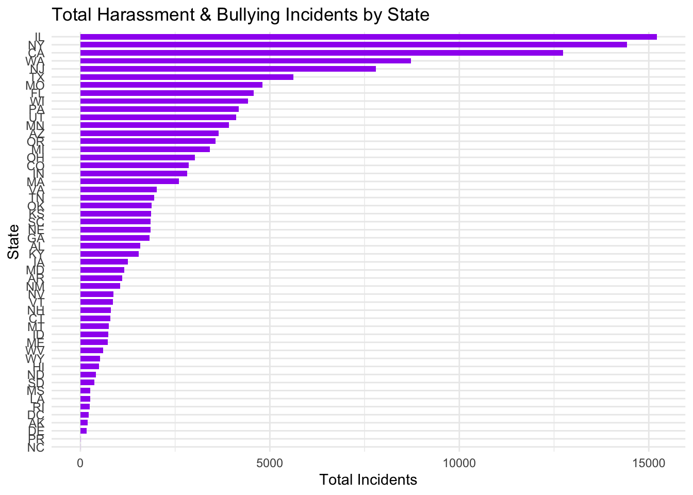
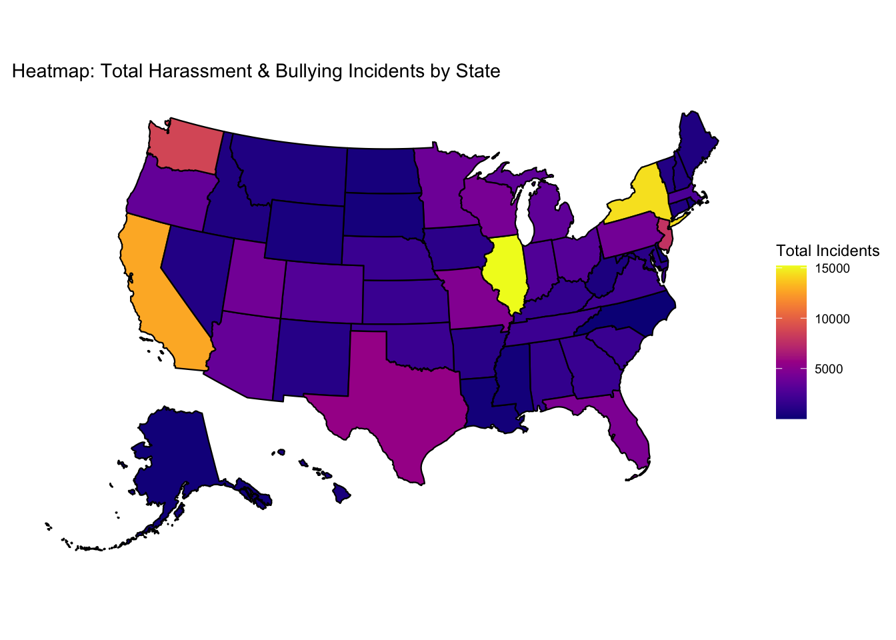
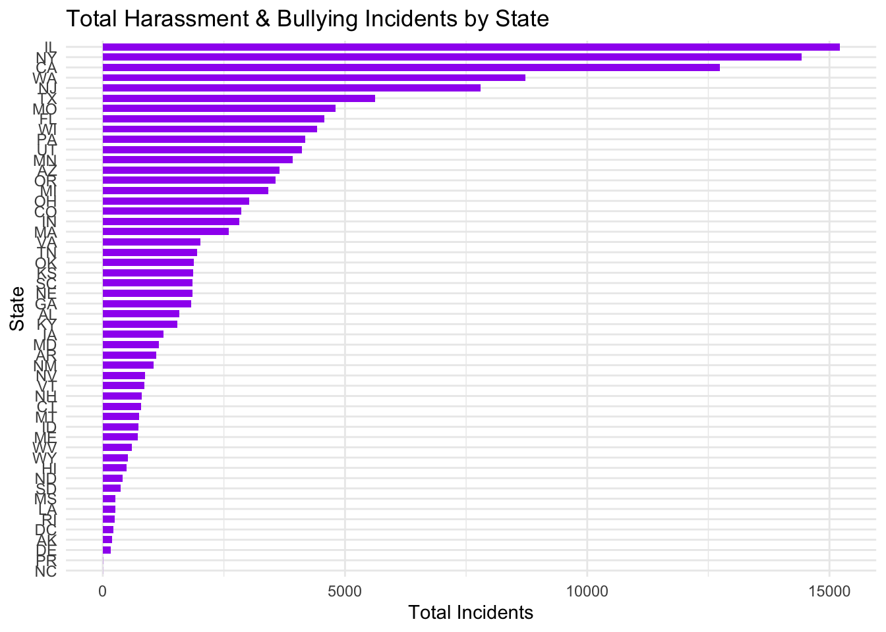
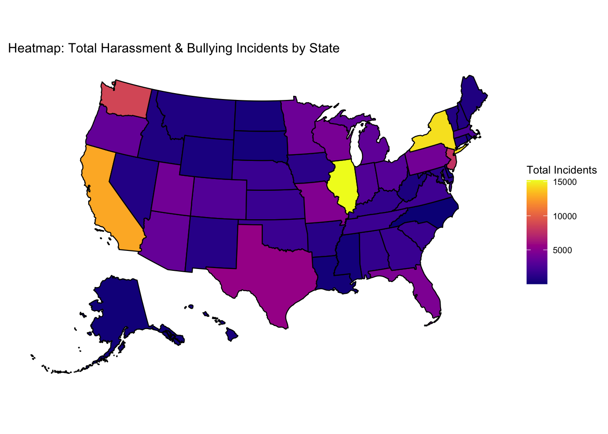

SAFE SCHOOLS FOR ALL: The foundational promise that schools are not only places of learning but also safe, inclusive environments where all students can thrive—regardless of race, disability, gender identity, or background. And yet, each year, thousands of students report experiencing bullying, harassment, and exclusion—often along lines of race, ability, or orientation. These are not isolated incidents, but part of a broader pattern that raises difficult questions: Why are some students disproportionately affected? What role does school infrastructure play? And perhaps most urgently—what can be done to disrupt this cycle?
We must ask ourselves: Is every student truly safe at school? Are disciplinary measures addressing harm, or reinforcing inequality? And how do support resources—or the lack thereof—shape these outcomes?
Analyzing public school data on harassment, bullying, and suspensions offers a critical lens into how educational environments succeed—or fail—to protect their most vulnerable students. By investigating the presence of school counselors, psychologists, and security staff alongside demographic and geographic variables, we can begin to identify patterns of disparity. Do more counselors correlate with fewer incidents? Are certain students more likely to be punished than protected?
This analysis helps uncover whether school resources are distributed equitably and whether their presence meaningfully impacts student safety and discipline outcomes. In doing so, we aim to contribute to a broader conversation about educational equity, institutional accountability, and the urgent need for reform.


The Support Gap: Examining the Link Between School Resources and Race-Based Harassment in U.S. Schools Racially-based harassment in U.S. schools remains persistently high across all states, highlighting a nationwide equity challenge in educational environments. However, our analysis reveals a consistent inverse relationship between the level of school-based support—such as counselors, psychologists, and security staff—and the frequency of race-related harassment incidents. These findings suggest that strengthening student support infrastructure may play a critical role in reducing race-based harassment and fostering safer, more inclusive learning environments.
This interactive dashboard allowed us to explore the relationship between school staffing levels and reported harassment across different states in a dynamic, user-driven way. By visualizing the average number of counselors, nurses, psychologists, and security guards per 100 students alongside racial harassment incident rates, we were able to surface clear geographic patterns and disparities. These insights helped validate our thesis—that more robust support infrastructure correlates with lower rates of race-based harassment—and gave us the tools to investigate outliers and high-risk regions more deeply. ## From a National Lens to a Massachusetts Focus
Using data from the Civil Rights Data Collection (2021–2022), we observed that:
These trends pushed us to zoom in on Massachusetts for a closer, state-level look.
We modeled harassment reports per 100 students against school support staffing using a log-log regression:
log(harassment) = β₀ + β₁ × log(total_staff)A 1% increase in total support staff correlates with a 0.35% decrease in harassment rates per 100 students
(β₁ = -0.352, R² = 0.08)
While the effect size is modest, the relationship is statistically significant—indicating that the presence of counselors, psychologists, nurses, and security staff has a measurable impact on student safety. However, this finding should be interpreted carefully:
No meaningful correlation was found between total support staff and suspension rates (R² < 0.01).
In fact, in Massachusetts, the data showed a slight increase in suspension rates with higher support staffing.
This counterintuitive result suggests that the role of support staff is more complex than simply acting as a buffer or moderator:
These are critical questions that require deeper, perhaps qualitative, follow-up research.
Massachusetts reflects national patterns—but also reveals tensions:
Harassment and support staff show a negative correlation
y = -0.376 - 0.325x, R² = 0.08, suggesting more staff likely reduces bullying and harassment.
Suspensions show a slight positive correlation
y = 2.14 + 0.064x, R² = 0.02—which, while not strong, suggests support staff may be embedded in systems that perpetuate punitive discipline.
This implies that infrastructure alone isn’t enough. Support staff must not only exist—but be:
Our data analysis points to a central truth:
Support staff reduce harassment, but not automatically or equally.
If we want safer schools, just hiring more people isn’t enough. We must also focus on:
As debates about school safety continue across the U.S., this work underscores a deeper need—not just for resources, but for reform rooted in justice, empathy, and community care.